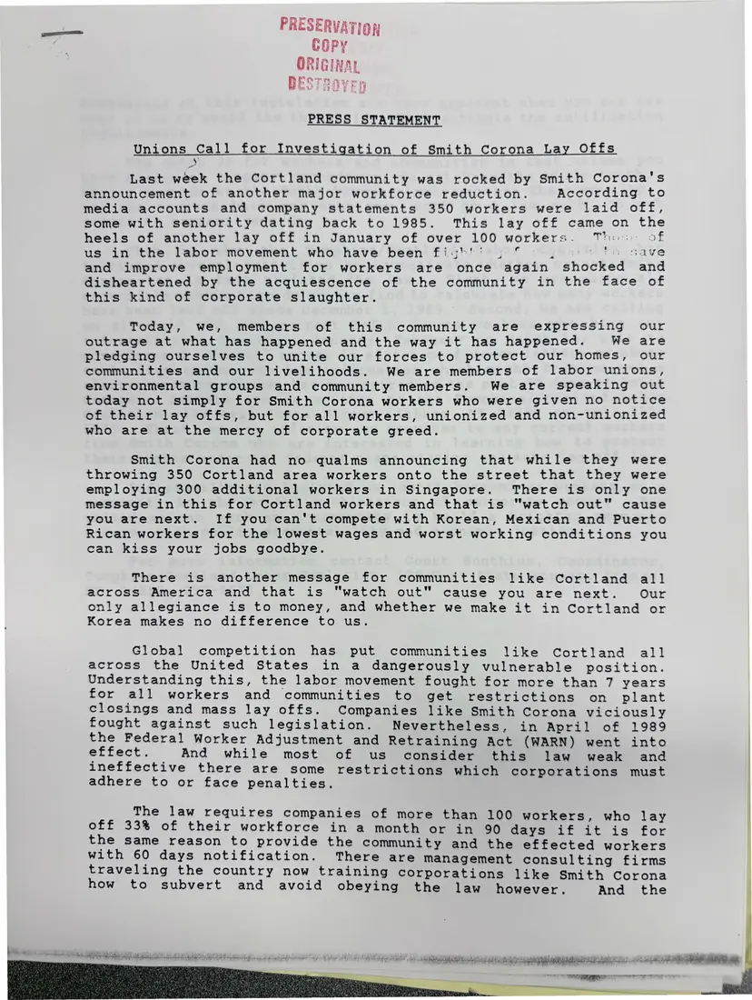
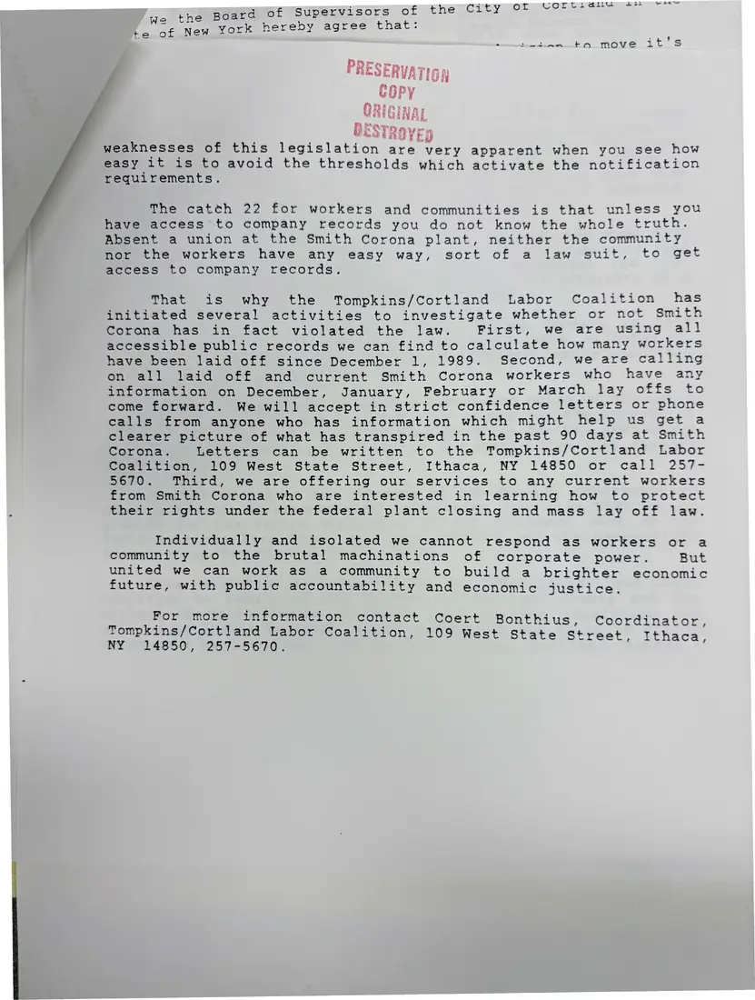

Press release, 2 pages
Press statement: “Unions Call for Investigation of Smith Corona Lay Offs”
[Early 1990]Date inferred
Area unions express outrage at layoffs at Smith Corona's Cortland plant, ask laid-off workers to contact the coalition, and announce an investigation into whether the company violated the federal plant closing law. Signed by coordinator Coert Bonthius.
Download or cite this itemPages


(open zoom view)Read the page text (machine-read, mostly readable)
This text was generated automatically from the photograph and has not been corrected. The image is the authoritative record.
PRESS STATEMENT Unions Call for Investigation of Smith Corona Lay Offs Last week the Cortland community was rocked by Smith Corona's announcement of another major workforce reduction. According to media accounts and company statements 350 workers were laid off, some with seniority dating back to 1985. This lay off came on the heels of another lay off in January of over 100 workers. Tho: of us in the labor movement who have been figh'' | ° ¥ NG AVS and improve employment for workers are once again shocked and disheartened by the acquiescence of the community in the face of this kind of corporate slaughter. Today, we, members of this community are expressing our outrage at what has happened and the way it has happened. We are pledging ourselves to unite our forces to protect our homes, our communities and our livelihoods. We are members of labor unions, environmental groups and community members. We are speaking out today not simply for Smith Corona workers who were given no notice of their lay offs, but for all workers, unionized and non-unionized who are at the mercy of corporate greed. Smith Corona had no qualms announcing that while they were throwing 350 Cortland area workers onto the street that they were employing 300 additional workers in Singapore. There is only one message in this for Cortland workers and that is "watch out” cause you are next. If you can't compete with Korean, Mexican and Puerto Rican workers for the lowest wages and worst working conditions you can kiss your jobs goodbye. There is another message for communities like Cortland all across America and that is "watch out" cause you are next. Our only allegiance is to money, and whether we make it in Cortland or Korea makes no difference to us. Global competition has put communities like Cortland all across the United States in a dangerously vulnerable position. Understanding this, the labor movement fought for more than 7 years for all workers and communities to get restrictions on plant closings and mass lay offs. Companies like Smith Corona viciously fought against such legislation. Nevertheless, in April of 1989 the Federal Worker Adjustment and Retraining Act (WARN) went into effect. And while most of us consider this law weak and ineffective there are some restrictions which corporations must adhere to or face penalties. The law requires companies of more than 100 workers, who lay off 33% of their workforce in a month or in 90 waveeif it is for the same reason to provide the community and the effected workers with 60 days notification. There are management consulting firms traveling the country now training corporations like Smith Corona how to subvert and avoid obeying the law however. And the bu ia ae ee Ea ee CRY Pe ae POT Boe at Si a a dar alata be AE RU NN Cah Nees aa eel a A


(open zoom view)Read the page text (machine-read, mostly readable)
This text was generated automatically from the photograph and has not been corrected. The image is the authoritative record.
thepoaraof Supervisors of the City ot GOrmel awe = eS t ie “New york hereby agree that: Htmtamnu tO move Leis ag of? } weaknesses of this legislation are very apparent when you see how easy it is to avoid the thresholds which activate the notification requirements. The catch 22 for workers and communities is that unless you have access to company records you do not know the whole truth. Absent a union at the Smith Corona plant, neither the community nor the workers have any easy way, sort of a law suit, to get access to company records. That is why the Tompkins/Cortland Labor Coalition has initiated several activities to investigate whether or not Smith Corona has in fact violated the law. First, we are using all accessible public records we can find to calculate how many workers have been laid off since December 1, 1989. Second, we are calling on all laid off and current Smith Corona workers who have any information on December, January, February or March lay offs to come forward. We will accept in strict confidence letters or phone calls from anyone who has information which might help us get a clearer picture of what has transpired in the past 90 days at Smith Corona. Letters can be written to the Tompkins/Cortland Labor Coalition, 109 West State Street, Ithaca, NY 14850 or call 257- 5670. Third, we are offering our services to any current workers from Smith Corona who are interested in learning how to protect their rights under the federal plant closing and mass lay off law. Individually and isolated we cannot respond as workers or a community to the brutal machinations of corporate power. But united we can work as a community to build a brighter economic future, with public accountability and economic justice. For more information contact Coert Bonthius, Coordinator, Tompkins/Cortland Labor Coalition, 109 West State Street. Ith NY o°24850', ©2567-5670: eet, aca,
See something wrong, or recognize a person or event? Send a correction. If you hold rights in this item or think it should not be public, write to the same address.